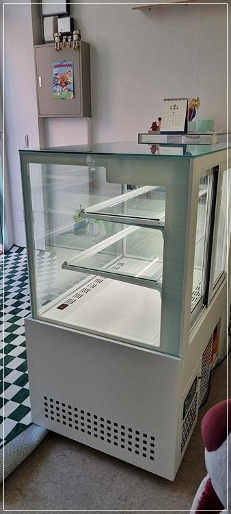
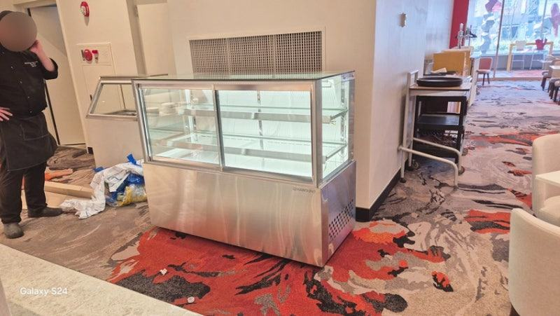
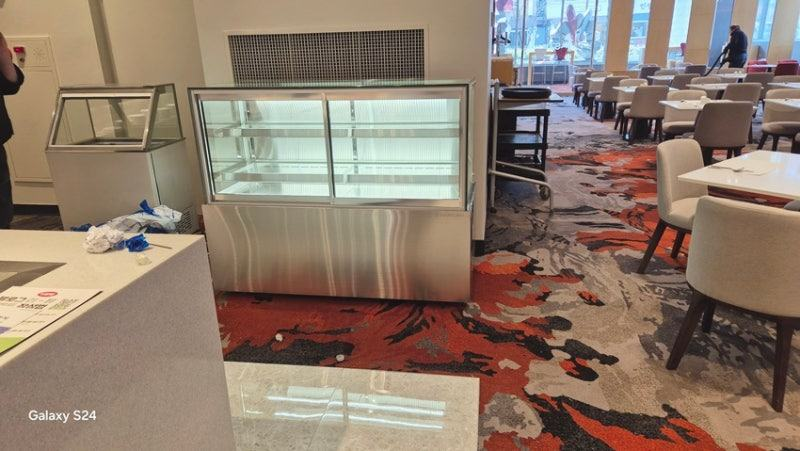
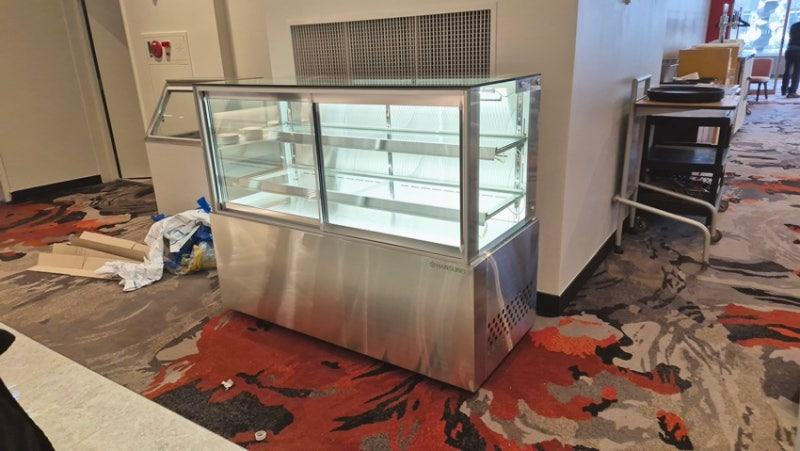
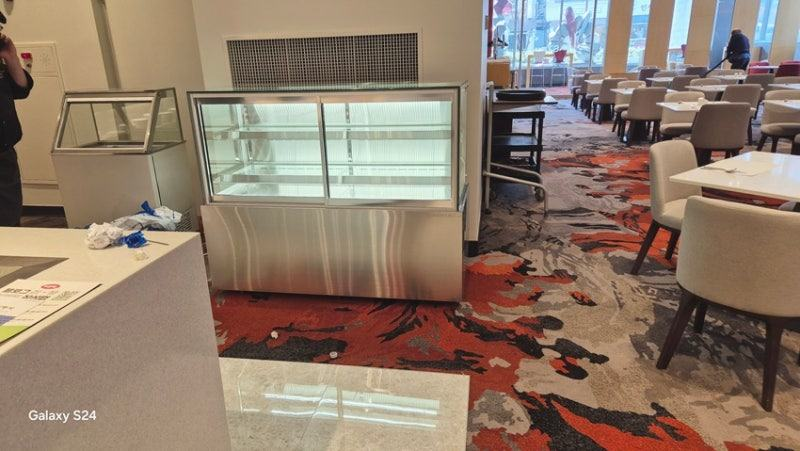

한성제품
냉장쇼케이스 견적, 요청 전에 준비할 정보와 비교하는 법

냉장쇼케이스 견적을 정확하게 받으려면 설치 자리의 가로·깊이·높이, 진열할 상품과 양, 문 방식, 냉각 방식, 조명 색을 먼저 정리해 보내시는 것이 좋습니다. 여러 곳의 견적을 비교할 때는 이 조건과 함께 배송·설치, A/S 범위가 같은지부터 맞춰 보세요.
안녕하세요. 매장 크기에 맞춰 냉장쇼케이스를 직접 제작하는 한성쇼케이스입니다.
견적 문의를 받다 보면 "냉장쇼케이스 하나 얼마예요?"라는 한 줄로 시작하는 경우가 많습니다. 그런데 냉장쇼케이스는 크기, 문, 냉각 방식, 조명에 따라 구성이 크게 달라서, 정보 없이 받은 견적은 대략적인 참고 수준에 머물 수밖에 없습니다.
몇 가지만 미리 정리해 두시면 한 번에 정확한 견적을 받을 수 있고, 여러 곳을 비교할 때도 훨씬 수월해집니다.
오늘은 냉장쇼케이스 견적을 요청하기 전에 준비할 정보와, 받은 견적서를 비교하는 방법을 순서대로 정리해 보겠습니다.
1. 치수는 자리와 반입 경로까지
가장 기본은 쇼케이스가 들어갈 자리의 가로, 깊이, 높이입니다. 벽 사이에 넣는다면 양옆 여유와 뒤쪽 열 배출 공간까지 함께 재 주세요.
바닥에 턱이나 배관이 있다면 사진으로 함께 보내 주시면 좋습니다.
출입문 폭과 통로, 계단 여부도 견적에 영향을 줍니다. 반입이 까다로운 매장은 설치 방법이 달라질 수 있어, 미리 알려 주셔야 견적과 실제 설치가 어긋나지 않습니다.
- 설치 자리 가로·깊이·높이
- 양옆과 뒤쪽 여유 공간
- 출입문 폭과 계단 여부
2. 무엇을 얼마나 진열할지
진열할 상품이 케이크인지, 음료인지, 반찬인지에 따라 칸 높이와 깊이, 단수가 달라집니다. 대표 상품의 크기와 하루 진열량을 알려 주시면 그에 맞는 단수와 내부 구성을 잡을 수 있습니다.
편의점처럼 좁은 공간에 많은 상품을 진열해야 하는 매장이라면 폭보다 높이와 칸 구성이 더 중요해집니다.
상품 사진 몇 장만 보내 주셔도 구성 방향을 정하는 데 큰 도움이 됩니다.
계절에 따라 진열 상품이 바뀌는 매장이라면 그 점도 함께 알려 주세요. 여름엔 음료, 겨울엔 디저트처럼 상품이 달라지면 선반 높이를 조절할 수 있는 구성이 유리할 수 있고, 이는 견적 구성에도 반영됩니다.


3. 문, 냉각, 조명, 외관
손님이 직접 꺼내는지 직원이 꺼내 주는지에 따라 앞문형, 뒷문형, 양문형이 정해집니다. 냉각 방식은 성에가 적고 온도가 고른 간냉식과 수분 유지에 유리한 직냉식 중에서 진열 상품에 맞춰 고르시면 됩니다.
조명 색과 프레임 색, 유리 형태도 견적에 반영됩니다. 아직 정하지 못하셨다면 매장 인테리어 사진을 보내 주세요.
분위기에 맞는 구성을 함께 제안해 드립니다.
- 문 방식
- 간냉식·직냉식
- 조명 색과 프레임 색
- 유리 형태
4. 여러 견적을 비교할 때
견적서를 나란히 놓으면 금액부터 보게 되지만, 먼저 조건이 같은지 확인하세요. 크기, 냉각 방식, 문 방식, 조명이 다르면 금액도 다른 것이 당연합니다.
같은 조건으로 맞춰 다시 요청하시면 비교가 정확해집니다.
배송과 설치가 포함되는지, 고장 났을 때 A/S를 어떻게 받는지, 무상 기간이 있는지도 견적서에 적혀 있는지 보세요.
냉장쇼케이스는 매일 돌아가는 장비라 이 조건이 금액 차이보다 더 큰 영향을 줄 때가 많습니다.
견적을 받은 뒤 궁금한 항목은 바로 물어보세요. 같은 단어라도 업체마다 포함하는 범위가 다를 수 있어, 애매한 부분을 미리 확인해 두면 설치 후에 추가 비용이나 오해가 생기지 않습니다.
체크리스트
- 설치 자리 치수와 여유 공간
- 반입 경로
- 진열 상품 종류와 양
- 문 방식과 냉각 방식
- 조명·프레임 색과 유리 형태
- 배송·설치·A/S 포함 여부
현장에서 자주 보는 경우: 좁은 편의점에 많은 상품을 담아야 할 때
편의점은 한정된 매장 안에 수많은 상품을 진열해야 해서 딱 맞는 사이즈의 냉장쇼케이스가 필요합니다. 기성품으로는 자리와 진열량을 동시에 맞추기 어려워 견적 단계부터 고민이 길어지는 경우가 많습니다.
이럴 때는 방문과 전화 상담으로 매장 상황을 꼼꼼히 확인한 뒤, 최소한의 공간에서 진열 효율을 높이는 크기와 디자인으로 맞춤 제작을 제안합니다.
전문 제조 공장에서 직접 만들어 유통 마진을 줄였고, 설치 후 문제가 생기면 빠르게 대응하는 것까지 견적 상담에서 함께 안내해 드립니다.





자주 묻는 질문
치수를 모르는데 견적을 받을 수 있나요?
대략적인 크기와 매장 사진으로 먼저 방향을 잡을 수 있습니다. 정확한 견적은 실측 치수가 나온 뒤에 다시 확정하시는 것이 좋습니다.
견적 받은 뒤 크기를 바꾸면 다시 받아야 하나요?
크기나 구성이 바뀌면 금액도 달라지니 변경된 조건으로 다시 안내해 드립니다. 제작에 들어가기 전에 최종 조건을 한 번 더 확인해 주세요.
두 대를 함께 견적 받으면 따로 받는 것과 다른가요?
같은 매장에 나란히 둘 장비라면 함께 견적을 받으시는 편이 좋습니다. 높이와 색, 문 방향을 한 번에 맞출 수 있어 설치 후 진열 라인이 깔끔하게 이어집니다.
매장 조건에 맞춰 만드는 한성쇼케이스
원하시는 제품 사진과 설치할 공간 사진만 보내 주셔도 매장에 맞는 구성을 추천해 드립니다.
- 전국 240여 개 A/S 전담 센터 운영
- 본사 대량 자재 매입으로 품질 대비 합리적인 가격
- 유럽제·삼성 냉각 콤프레셔 적용
- 국내 최초 쇼케이스 전문 디자이너 상주
매장 폭과 원하는 진열 구성을 알려 주세요. 실측과 견적을 안내해 드립니다.
031-986-2458